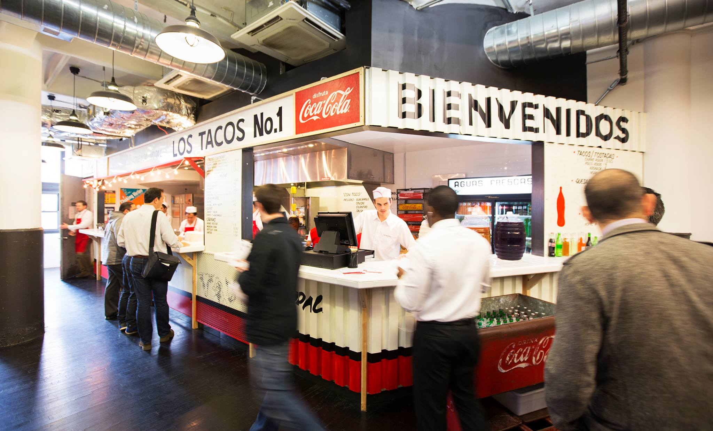
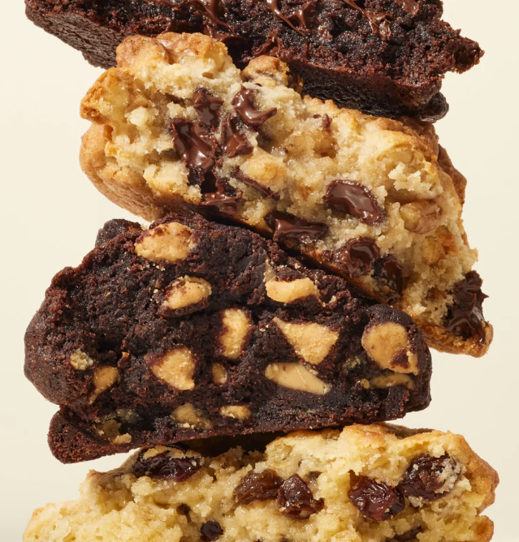
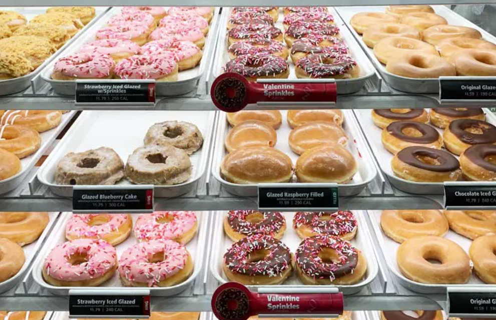
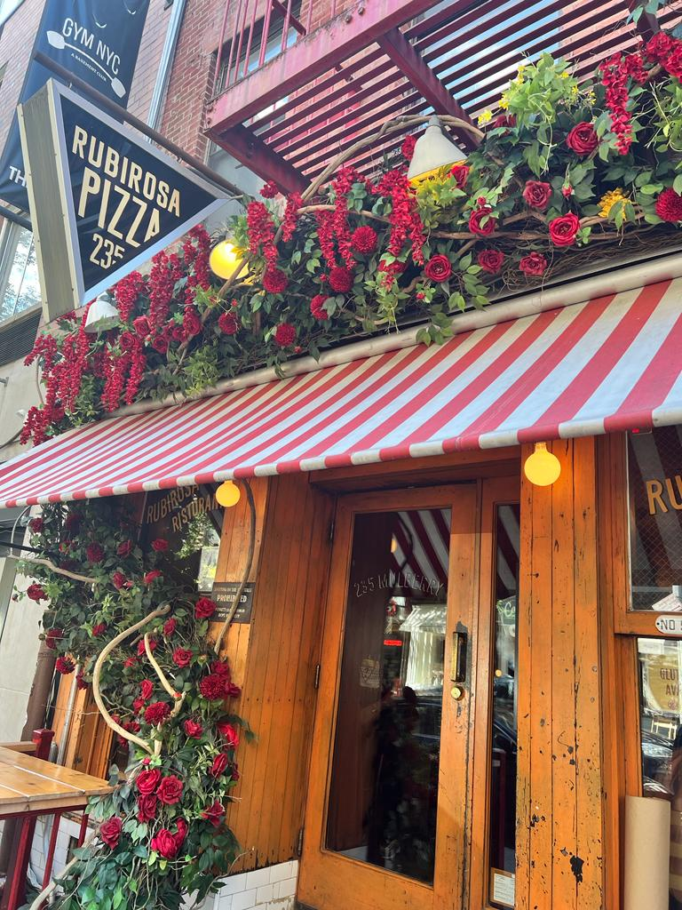
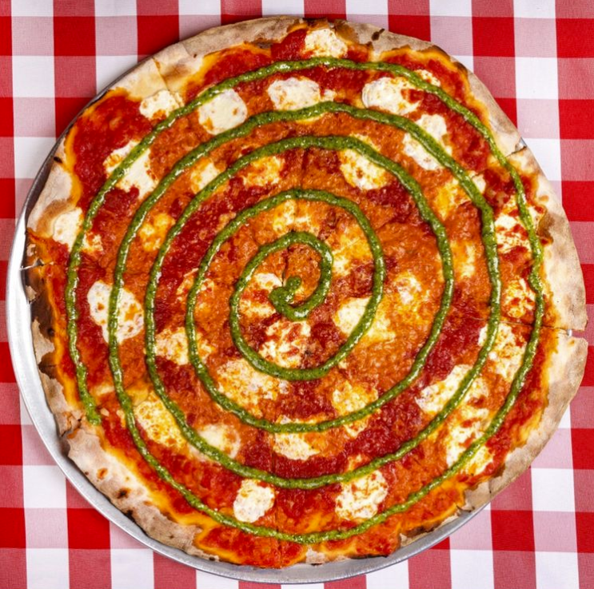
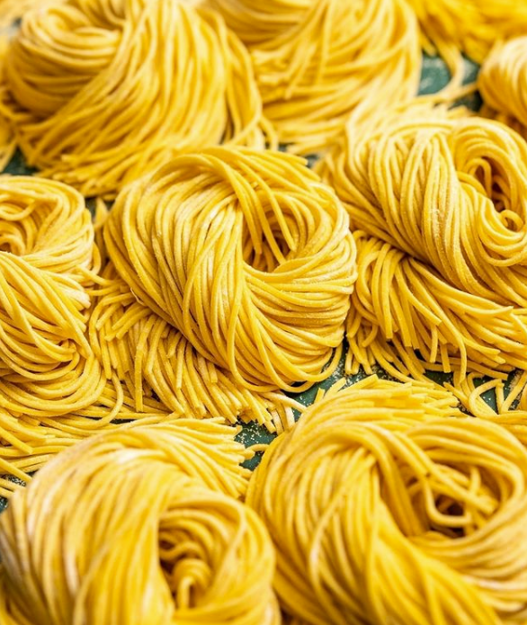
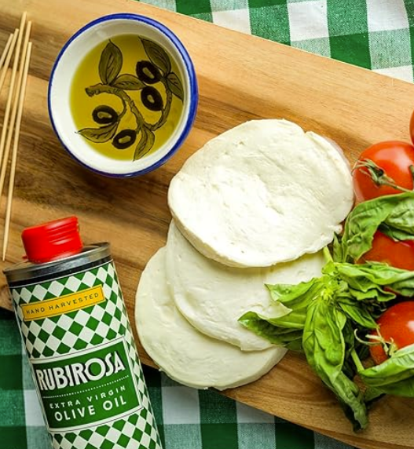
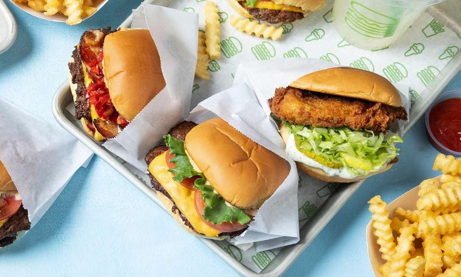
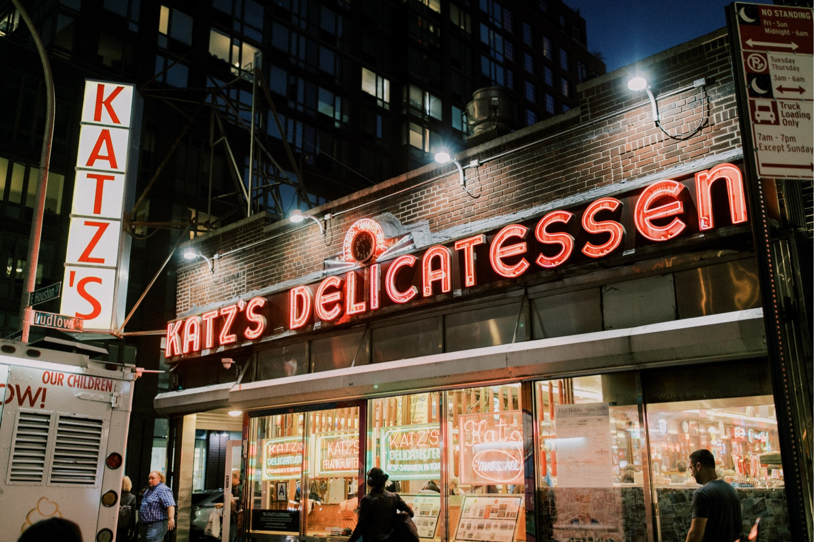

Gastronomía
Volver
Aquí encontraras lugares deliciosos para comer en esta ciudad!
Los Tacos Nº 1
Localizado en: Chelsea Market
Ubicación: 75 9th Ave, New York, NY 10011

Menú:
Los tacos 1
Opción vegetariana: Si! Grilled cactus y quesadillas
Galletas Levain
Localizado en: Levain Bakery, Upper East Side

imágen de levainbakery.com
Ubicación: 1484 3rd Ave, New York
Ver más:
Levain Bakery
Krispy Doughnuts
Localizado en: Krispy Kreme, Upper East Side
Ubicación: 1276 Lexington Ave, New York

Ver más:
Krispy Kreme
Rubirosa Pizzaria
Localizado en: Cerca del Washington Square Park y el Barrio del Soho, Manhattan
Ubicación: 235 Mulberry St, New York

Menú:
Rubirosa NYC
Opción vegetariana: Si
  
imágenes de @rubirosa_nyc
Un clásico,Shake Shack hamburguesas!
Localizado en: Varios locales en Manhattan

Menú:
Shake Shack
Opción vegetariana: Si, tienen hamburguesas vegetarianas!
Sandwich de Pastrami
Localizado en: Katz's Delicatessen
Ubicación: 205 E Houston St, New York

Menú:
Katz´s Delicatessen
Opción vegetariana: Si, aunque aquí la especialidad es la carne